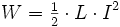
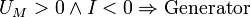
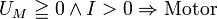
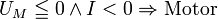
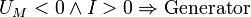

Vierquadrantensteller
{kind=link}
Ein Vierquadrantensteller besteht aus einer elektronischen H-Brückenschaltung aus vier Halbleiterschaltern, meist aus Transistoren, welche eine Gleichspannung in eine Wechselspannung variabler Frequenz und variabler Pulsbreite umwandeln kann. Vierquadrantensteller in der Energietechnik können auch Wechselspannungen unterschiedlicher Frequenzen in beiden Richtungen ineinander umwandeln.
Inhaltsverzeichnis[Verbergen] |
Vierquadrantensteller für Gleichstrommotoren [Bearbeiten]
Anschaulich erklärt sich die Aufgabe eines Vierquadrantenstellers anhand der Ansteuerung eines Gleichstrommotors für Beschleunigen und Bremsen in beiden Drehrichtungen. Das Grundgerüst eines Vierquadrantenstellers besteht aus zweimal zwei in Reihe geschalteten Transistoren mit jeweils einer Freilaufdiode in Sperrpolung. In der Mitte zwischen den beiden Hälften liegt der zu steuernde Gleichstrommotor. Dessen Ersatzschaltbild besteht aus der Induktivität der Motorwicklung in Reihe mit deren ohmschen Verlusten und der Spannungsquelle UM, die aufgrund der Läuferdrehung induziert wird.
Zum besseren Verständnis seien hier grundlegende Formeln vorweg aufgeführt:
- Die durch den Motor umgesetzte Leistung ist das Produkt aus UM und I. Besitzen I und UM entgegengesetzte Polarität arbeitet der Motor als Generator und gibt Leistung ab.
- PMotor = UM · I
- Das vom Motor abgegebene Drehmoment ist näherungsweise proportional zum fließenden Strom.
- MM ~ I
- Die Erregungsspannung UM aufgrund der Läuferdrehung ist näherungsweise proportional zur Drehzahl
- UM ~ nrot
- Die im Magnetfeld gespeicherte Energie hängt direkt mit dem Strom zusammen.
- 
Je nach Betriebsweise arbeitet der Vierquadrantensteller als Tiefsetzsteller zum Antreiben oder als Hochsetzsteller zum Bremsen und ermöglicht zudem einen Wechsel der Polarität zur Drehrichtungsänderung.
Betriebsmodi [Bearbeiten]
{kind=link}
- Tiefsetzsteller
Der Tiefsetzsteller-Betrieb dient zum Antreiben, der Motor nimmt Leistung auf. In der dargestellten Schaltung wird dazu T4 durchgeschaltet und auf T1 ein PWM-Signal gelegt. Leitet T1, liegt am Motor eine positive Spannung an, die Induktivität magnetisiert sich auf, ein positiver Strom fließt und der Motor erzeugt ein beschleunigendes Drehmoment. Schaltet T1 ab, induziert die Motorwicklung Spannung und der Strom fließt über D2 weiter, wobei die Magnetisierung des Motors wieder leicht abnimmt. Je länger die Leitphase im Verhältnis zur Sperrphase dauert, desto mehr Strom fließt und umso stärker ist die Beschleunigung.
Für entgegengesetzte Polarität wird T2 durchgeschaltet und T3 mit einem PWM-Signal versorgt.
- Hochsetzsteller
Der Hochsetzsteller-Betrieb dient zum Bremsen und Rückspeisen, der Motor gibt Leistung ab. Dazu wird T4 durchgeschaltet und an T2 ein PWM-Signal gelegt. Leitet T2, magnetisiert sich die Motorinduktivität über UM auf, ein negativer Strom I fließt. Der Strom besitzt zu UM eine entgegengesetzte Polung und der Motor gibt Leistung ab, die im Magnetfeld gespeichert wird. Sperrt anschließend T2, dann induziert die Motorwicklung Spannung und der Strom fließt über D1 weiter, wobei die Magnetisierung wieder leicht abnimmt und die Energie aus dem Magnetfeld in die Versorgungsspannung abgegeben wird. Der Motor wandelt mechanische Leistung in elektrische Leistung und bremst deswegen.
Zu beachten ist, dass dem Hochsetzsteller UM als Spannungsversorgung dient und UB als Last.
Für entgegengesetzte Polarität wird T2 durchgeschaltet und T4 mit einem PWM-Signal versorgt.
- Leerlauf
Noch keine Erwähnung fand der Leerlaufbetrieb, bei dem höchstens ein Transistor leitet. Nachdem sich ein Restmagnetfeld abgebaut hat fließt kein Strom mehr durch den Motor. Es wird weder beschleunigt noch gebremst.
- „Notbremse“
Eine nur bedingt empfehlenswerte Betriebsart ist die Notbremse, bei der T2 und T4 leiten und damit den Motor kurzschließen. Der vom Motor erzeugte Strom wird nur durch die ohmschen Verluste begrenzt und Leistung wird in Wärme umgewandelt. Wichtig ist, dass alle Bauteile die auftretenden Werte aushalten.
Übersicht [Bearbeiten]
Der Wortteil Quadrant spielt auf die vier Bereiche in einem Koordinatensystem an, wobei der Strom (≘ Drehmoment) auf der x-Achse liegt und die Spannung (≘ Drehzahl) auf der y-Achse. Nachfolgend sind die Betriebsarten entsprechend ihrer Position im Koordinatensystem anschaulich aufgeführt.
|
 Quadrant 2 |
 Quadrant 1 |
|
Quadrant 3  |
Quadrant 4  |
{kind=link}
{kind=link}
{kind=link}
{kind=link}
Rot kennzeichnet in den Grafiken jeweils den alternierenden Schalter und blau den permanent leitenden Schalter.
Ansteuerung [Bearbeiten]
{kind=link}
Bei der sicheren Ansteuerung vom MOSFET-H-Brücken hilft eine Ansteuerlogik mit belastbaren Treiberstufen, MOSFET-Treiber oder H-Brücken-Treiber genannt. Die Logik stellt sicher, dass nicht beide Transistoren (T1 und T2, bzw. T3 und T4) gleichzeitig eingeschaltet werden können. Des Weiteren ist ein „turn-on delay“ integriert (nicht zu verwechseln mit der Einschaltverzögerung), das nur das Einschalten der MOSFETs verzögert, jedoch nicht das Ausschalten. Dadurch wird die Verzögerungszeit, bis ein Transistor sperrt, überbrückt und verhindert, dass beim Umschalten sich die Einschaltphasen der Transistoren überlappen und einen Kurzschluss bilden (engl. cross conduction oder shoot-through). Auch bei kürzesten Überlappungen im µs-Bereich ergeben sich in den Versorgungsleitungen hohe Stromspitzen, die z. B. dazu führen können, dass die zulässige Rippelstrom-Belastung von Glättungs-Elektrolytkondensatoren überschritten wird.
Um die oberen Transistoren (T1 und T3) durchzuschalten, muss an deren Eingang eine über der Versorgungsspannung UB liegende Spannung anstehen. Bei Treibern im Kleinspannungsbereich geschieht dies meist mittels Bootstrapping.
Weitere Betrachtungen [Bearbeiten]
Nachteil der Vierquadrantensteller ist das niedrige Bremsmoment im Stillstand, da UM einen kleinen Wert annimmt. Bei idealer Betrachtung bleibt der Strom konstant und damit das Drehmoment, sprich Bremskraft, konstant. Problematisch sind die ohmschen Verluste, denn wenn UM klein bleibt, dann gilt das auch für den Strom (I = U/R). Entsprechend ergibt eine geringe Drehzahl eine geringe mögliche Bremskraft.
Für einen ordnungsgemäßen Betrieb muss der Motor im richtigen Quadranten gesteuert werden. Geschieht dies nicht, sind zwei Fehlerfälle denkbar:
- Bremsen bei verkehrter Drehrichtung: Die Motorinduktivität wird nicht mehr entmagnetisiert und der Motor verhält sich wie bei einem Kurzschluss. Der Bremsstrom wird nur durch die ohmschen Verluste der Wicklung begrenzt. Der Motor bremst sehr stark.
- Beschleunigen bei verkehrter Drehrichtung: Die Motorinduktivität wird nicht mehr entmagnetisiert. Schalten nun beide Transistoren durch, fließt der durch die ohmschen Verluste begrenzte Strom und dabei addieren sich UM und UB. Der Motor bremst stark, abhängig vom Pulsweitenverhältnis.
H-Brücken in Schaltnetzteilen [Bearbeiten]
Wird statt eines Motors ein Transformator in der Schaltung eingesetzt, kann durch periodisches Umschalten ein Wechselstrom durch den Transformator erzeugt werden. Dieses Prinzip wird in Schaltnetzteilen größerer Leistung und in Schweiß-Invertern, aber auch in Wechselrichtern und Frequenzumrichtern verwendet.
Bei Schaltnetzteilen wird die variable effektive Wechselspannung im Transformator oft dadurch erzeugt, dass beide Halbbrücken mit konstanter Frequenz und symmetrischen Impulsen (duty cycle 50 %), jedoch variabler Phasenlage zueinander arbeiten (Phase shifting Converter). Das hat Vorteile bei der Ansteuerung und verringert Schaltverluste.
Vierquadrantensteller in der Energietechnik [Bearbeiten]
Vierquadrantensteller in der elektrischen Energietechnik zeichnen sich dadurch aus, dass sie elektrische Leistung bei wechselnden Polaritäten in beiden Richtungen transportieren können. Damit kann zum Beispiel ein Antrieb mit einem Asynchronmotor realisiert werden, der beim Bremsen Energie ins Netz zurückspeist. Umrichter ohne diese Fähigkeit verwandeln die Bremsenergie in Wärme.
Umrichter großer Leistung dienen auch der Kopplung von Energienetzen mit nicht synchronen oder abweichenden Frequenzen. Auch sie gestatten den Energiefluss in beiden Richtungen.
Siehe auch [Bearbeiten]
- Zweiquadrantensteller
- Die H-Brückenschaltung in Audioverstärkern wird Bridge Terminated Load (BTL) genannt; hier arbeiten zwei Halbbrücken-Gegentaktverstärker 180° phasenverschoben gegeneinander auf die Last.
- Messbrücken besitzen ebenfalls H-Brückenschaltungen, jedoch aus Widerständen oder Sensoren
- Gegentaktflusswandler, Inverter und Wechselrichter können ohne, mit einer Halbbrücke oder mit einer H-Brücke (Vollbrücke) aus Halbleiterschaltern realisiert werden.
- Thyristorsteller werden oft als H-Brücke mit zwei Dioden und zwei Thyristoren realisiert.
- H5-Topologie als Abwandlung
Weblinks [Bearbeiten]
- Skript zur Vorlesung Leistungselektronik 1 von Prof. Dr.-Ing. J. Roth-Stielow, Universität Stuttgart (PDF-Datei; 529 kB)